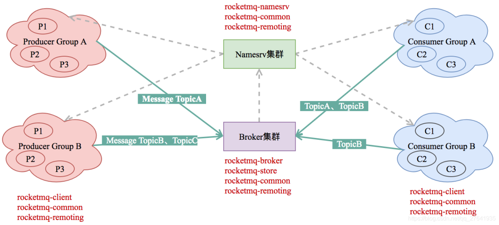
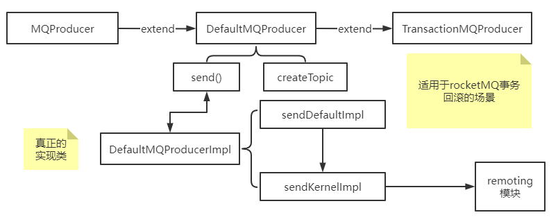
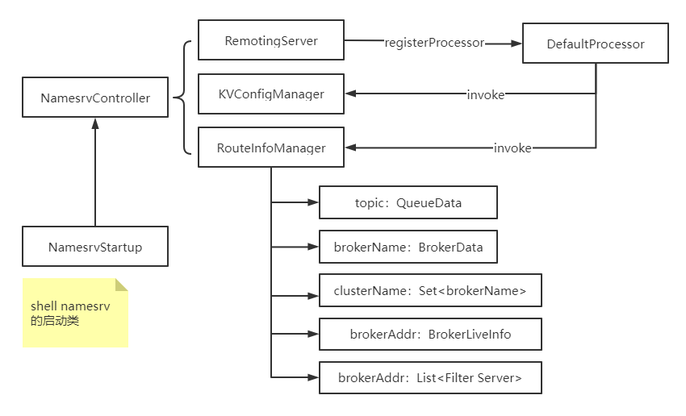

# 设计架构
# Producer
消息提供 / 发布者，支持分布式和集群部署
通过 NameServer ，获取 Broker 路由信息，通过负载均衡模块选择对应的 Broker 集群队列，并发布消息。
投递的过程支持快速失败并且低延迟。
# Consumer
消息消费者，支持分布式和集群部署
支持 push /pull 进行消费；支持集群（默认消费模式）和广播形式消费
- 集群模式：同一个
ConsumerGroup下，一条消息消费一次 - 广播模式：同一个
ConsumerGroup下，一条消息每个实例都消费一次
实时消息订阅（订阅 topic）
# NameServer
topic 路由注册中心，（类似 dubbo 的 zookeeper），支持 broker 的注册和发现
AP 的设计：Availability（可用性）+ Partition Tolerance（分区容错性）
NameServer 节点之间并不通信，各个时刻数据没法保持一致（不遵循 Consistency（一致性））
Broker 管理：接受 Broker 集群注册信息并保存作为路由信息的基本数据
提供健康检查：检查 Broker 是否存活
每个 NameServer 将保存关于 Broker 集群的整个路由信息和用于客户端查询的队列信息，然后 Producer 和 Conumser 通过 NameServer 就可以知道整个 Broker 集群的路由信息，从而进行消息的投递和消费。
如何注册 topic？
-
手动创建，指定对应的 broker 和消息队列数量进行创建
-
自动创建
1
autoCreateTopicEnable = true
-
生产发送消息时，如果指定的 Topic 不存在，
NameServer会返回一个【默认主题：TBW102】的路由信息，使得生产者能够正常发生消息 -
Broker 收到消息后，发现消息对应 Topic 不存在，且 Broker 允许自动创建 Topic，则会为消息创建 Topic ，并定时把路由信息同步至
NameServer -
生产者也会定时从
NameServer同步最新的路由信息，缓存至本地 -
后续生产者发送消息时，就可以从本地的缓存中查询到对应 Topic 的路由信息了
-
# BrokerServer
broker 主要负责消息的存储、传递和查询以及服务高可用保证
broker 分为 Master 和 Slave，对应关系通过相同 BrokerName ，不同的 BrokerId 来定义， BrokerId = 0 表示 Master；broker 支持一主多从，但是只有 brokerId = 1 的从服务器才会参与消息的读负载 。
broker 定时将 topic 信息注册到 NameServer
# Topic 和 Tag
- topic 为 消费 和 提供者 订阅的一种主题
- tag 为 topic 更细粒度的一种划分。例：topic = order，你想要获取不同类型的订单，可以定义不同的 tag
# 网络部署
# 特点
- Producer 与
NameServer集群的一个节点建立连接（随机），获取 topic 路由信息，与 Master 建立长连接，并定时发送心跳 - Consumer 与
NameServer集群的一个节点建立连接（随机），获取 topic 路由信息，与 Master 和 Slave 建立长连接，并定时发送心跳
# 启动流程
- NameServer 启动，等待 Broker、Producer、Consumer 连接
- Broker 启动，跟所有的 NameServer 保持长连接，定时发送心跳包。心跳包中包含当前 Broker 信息 (IP + 端口等) 以及存储所有 Topic 信息。注册成功后，NameServer 集群中就有 Topic 跟 Broker 的映射关系。
- 收发消息前，先创建 Topic，创建 Topic 时需要指定该 Topic 要存储在哪些 Broker 上，也可以在发送消息时自动创建 Topic。
- Producer 发送消息，启动时先跟 NameServer 集群中的其中一台建立长连接，并从 NameServer 中获取当前发送的 Topic 存在哪些 Broker 上，轮询从队列列表中选择一个队列，然后与队列所在的 Broker 建立长连接从而向 Broker 发消息。
- Consumer 跟 Producer 类似，跟其中一台 NameServer 建立长连接，获取当前订阅 Topic 存在哪些 Broker 上，然后直接跟 Broker 建立连接通道，开始消费消息。
# 消息传输
# 消息刷盘
- 同步刷盘：等待数据保存到磁盘，broker 返回成功的 ACK 响应
- 异步刷盘：数据加载到 PageCache，就返回成功的 ACK 响应，启动一个新的新的进程将 PageCache 加载到磁盘
# 消息重复
# 补充：QOS
Quality of Service，服务质量
- 至少一次（at least once）
- 最多一次（at most once）
- 仅一次（Exactly once）
rocketMQ 支持 at least one，因此可能存在重复数据
# 回溯消费
注：fllink 中 end back 使用的 ？
已经消费成功的消息，业务需要回退重新消费，通过时间维度回退（精确到毫秒）
# 定时消息
定时消息（延迟队列）是指消息发送到 broker 后，不会立即被消费，等待特定时间投递给真正的 topic。 broker 有配置项 messageDelayLevel ，默认值为 1s 5s 10s 30s 1m 2m 3m 4m 5m 6m 7m 8m 9m 10m 20m 30m 1h 2h ，18 个 level。
# 消息回查和消息重试
- 消息回查针对 Producer。用于事务的
Haslf Message，默认回查 15 次。 - 消息重试针对 Consumer。Comsumer 消费成功后需要返回
Broker一个确认消息，如果没有返回则Broker认为这条消息消费失败，失败后会再重试消费该消息，默认重试 16 次
# 死信消息
消息重试失败后，保持无法正常消费的消息。可以通过 console 控制台对死信队队列的消息进行重发。
# 消息顺序
部分消息按照业务需求需要按顺序进行消费。例：订单状态：订单创建 → 订单付款 → 订单完成
- 分区顺序：根据 Sharding key 进行区块区分。可以采用 id 取 hash 放入不同的 消息队列，对消息队列进行先入先出操作，不同 id 之间互不影响
- 全局顺序：指定 topic 下的所有消息按照先入先出（FIFO）进行发布和消费。适用性不高
# 消息过滤
通过 tag 进行消息过滤。消息过滤在 broker 实现，减少对 consumer 的网络传输，缺点增加 broker 负担，同时实现困难。
# 源码解析

# acl
# broker
# client
rocketMQ 客户端实现
# Producer

主要逻辑在 package：producer 和 impl，真正的实现还是需要远程访问，需要用到 remoting 模块。
# filter
消息过滤，在 broker 和 consumer 中间加入了 filter 代理，主要有 broker 负责
# namesrv
NamesrvStartup 是 namesrv 的启动类，具体的实现类为 NamesrvController 。
create NamesrvController （create NamesrvConfig、create NettyServerConfig）
NamesrvController（initialize、start）

# remoting
基于 netty 的底层通信实现
# netty
NettyRemotingServer / NettyRemotingClient
-
read request 通过 InboundHandler 实现
-
process request -> response
通过
RequestProcessor接口，这样不同模块可以编写自己的实现类去转换 request -
write response 通过 writeAndFlush () 实现
# protocol
协议相关实现，对应
RemotingCommand
| length | head length | head data | body data |
|---|---|---|---|
| 4 byte | 4 byte | head length | length？ |
# 运行逻辑
- client 封装 RemotingCommand 类，将消息传输给 Server。消息传输在
AbstractNettyRemoting.invokeSyncImpl中 - Server 通过 channel 获取消息，再通过
AbstractNettyRemoting.processRequestMessage将 request 转换为 response，并将结果发送回 client - client 通过 channel 获取消息，再通过
AbstractNettyRemoting.processResponseMessage处理返回的结果，获取结果执行其他逻辑。
# srvutil
解析命令行的工具类
ServerUtil
# store
存储层实现，同时包括了索引服务，高可用 HA 服务实现
ConsumeQueue 不负责存储消息，只是负责记录它所属 Topic 的消息在 CommitLog 中的偏移量。
DefaultMessageStore 类下 ReputMessageService 的 doReput ，每隔 1 毫秒循环，通知 ConsumerQueue 进行更新
# 顺序存储
由于 Rocketmq 的信息是存储到文件的，硬盘的存储和读取效率会低于内存，同时顺序读写和随机读写的效率相差极大（顺序写的速度好像比随机写快了千倍）， DefaultMessageStore 也是通过顺序读写实现的，Java 的顺序读写通过 RandomAccessFile 类实现。
# tools
mq 集群管理工具，提供了消息查询等功能
# 疑问
rocketmq-namesrv模块中KVConfingManager的作用？rocketmq-store模块中，一个 topic 对应多个 Queue